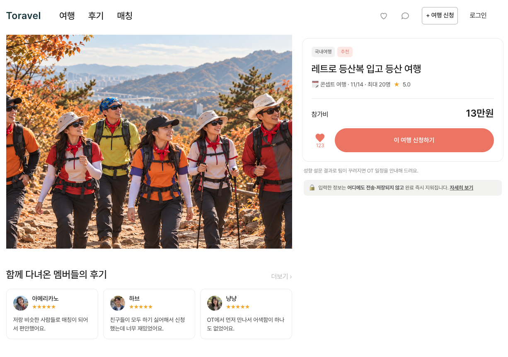
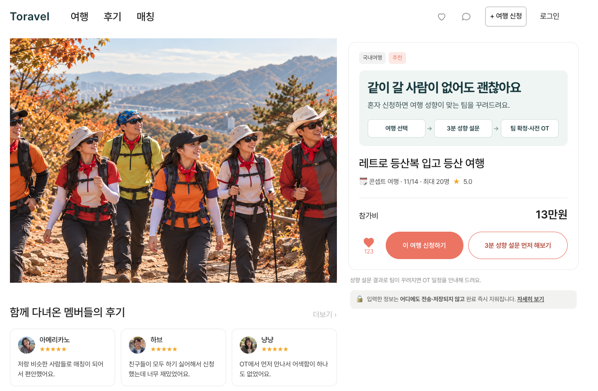
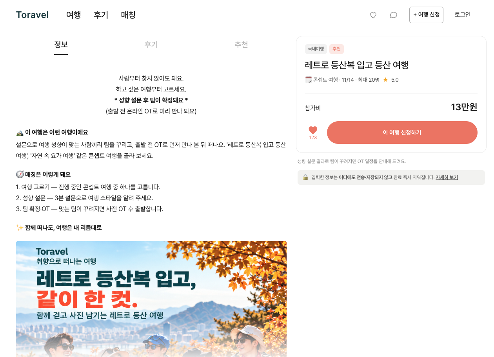
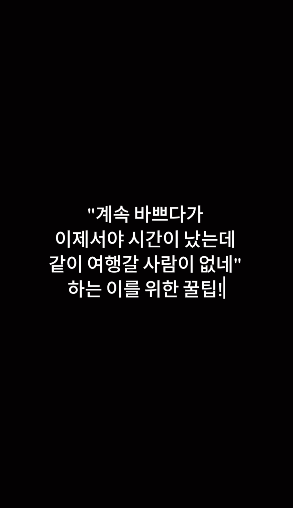
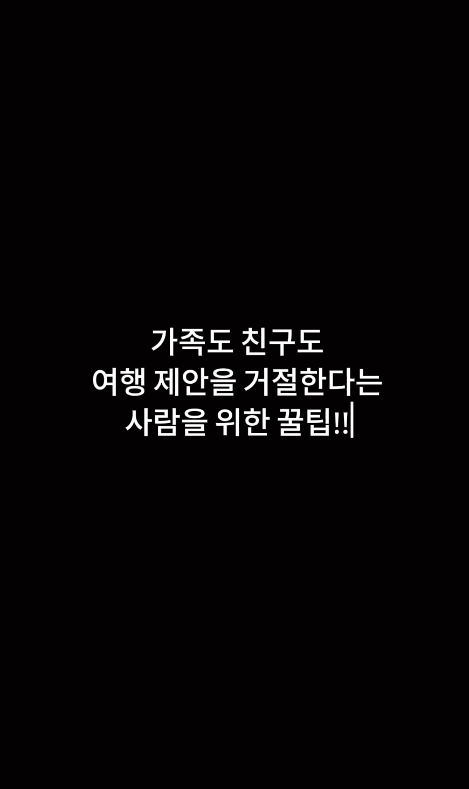
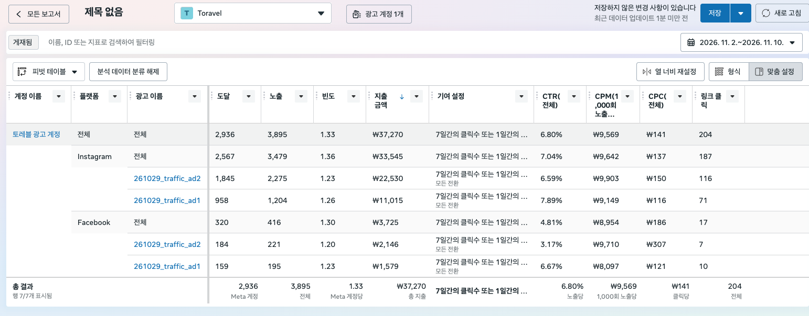

00Toravel2026.09.15~11.10
브랜드국내 콘셉트 여행을 먼저 고르고, 여행 성향이 비슷한 사람들과 떠날 수 있도록 기획한 가상 브랜드. 하고 싶은 여행은 있지만 같이 갈 지인이 없거나, 낯선 사람과 여행하는 게 걱정되는 2030을 떠올렸다.
상황 분석브랜드와 채널을 처음부터 설계했다. 같이 갈 사람을 찾기 어렵다는 점과, 모르는 사람과 여행할 때 여행 방식이 맞을지 불안하다는 점을 고객의 주요 장벽으로 봤다.
| 전체 목표 (북극성 지표) | 시작 | 목표 | 결과 | 출처 |
|---|
| 신청 후 여행 성향 설문 제출 수 | 시작 미측정 미측정 | 목표 건수 미설정 미측정 | 전체 완료 수 미측정 미측정 | GA4 보고서와 Data Studio 통합 보고서. 통합 보고서에 설정한 설문 완료율 목표는 3.0%(가정). 가정 |
| 축 | 목표 | 핵심 지표 | 장표 |
|---|
| 콘텐츠 | 릴스로 고객의 관심을 끌고, 랜딩에서 혼자 신청하는 부담을 줄인다 | 릴스 소재별 광고 링크 클릭률, 랜딩 수정 전후 신청 후 설문 완료율 | 01·02 |
| 퍼포먼스 | 유료 광고로 랜딩 유입을 만들고 사이트 행동을 확인한다 | 광고 링크 클릭 수, GA4 직접 방문 및 설문 경로 테스트 | 03·04 |
| 그로스 | 랜딩 유입 비용과 이후 행동의 측정 공백을 파악하고 휴면 고객의 재참여 흐름을 설계한다 | 랜딩 조회당 비용, 광고와 연결된 GA4 세션, 재참여 캠페인 신청률 | 05·06 |
| 내 사이트 | 만든 방법 | 측정 연결 | 테스트한 것 |
|---|
Toravel. 초기 제작은 레퍼런스를 선정하고 강사의 도움을 받았다. 이후 구성·디자인·카피·코드 수정·배포를 맡았다. 수정 요구사항을 Codex에 전달해 GitHub PR을 만들고 직접 병합해 GitHub Pages에 반영했다. GA4·GTM·Meta 픽셀을 연결하고 Meta 광고에 UTM을 붙였다. GA4 실시간 개요에서 직접 접속이 direct로 잡히는 것을 보고, 페이지 이동과 설문 제출까지 직접 진행해 데이터가 들어오는지 살폈다. |
최예진 · Toravel00
01콘텐츠혼자 신청하는 고객을 위해 매칭 안내를 첫 화면에 배치2026.11.05 수정, Meta 광고 집행 중
CodexGitHub Pages콘텐츠 기획랜딩 개선
| 핵심 지표 | 시작 | 목표 | 결과 | 출처 |
|---|
| 여행 신청 버튼 클릭률 | 미측정 미측정 | 목표치 미설정 미측정 | 미측정 미측정 | 수정 전후를 비교할 클릭률 집계 없음. |
| 신청 후 성향 설문 완료율 | 미측정 미측정 | 3.0%(가정, 전체 실습 목표) 가정 | 미측정 미측정 | Data Studio 통합 보고서. 랜딩 수정만의 별도 목표치는 미설정. 미측정 |
상황 분석레트로 등산에는 관심이 있어도 혼자 신청하는 부담이 있다고 봤다. 첫 화면에는 팀 구성과 OT에 대한 짧은 안내가 있었고, 구체적인 매칭 절차는 상세페이지 안에 있었다.
개선 목표방문자가 첫 화면에서 혼자 신청해도 된다는 점과 팀이 꾸려지는 과정을 이해하고, 신청 전에 설문을 체험할 수 있게 한다.
가설매칭 방식과 설문 내용을 신청 전에 확인할 수 있으면 혼자 신청을 망설이는 부담이 줄어들 것이다.
실행광고와 랜딩의 연결을 점검했다. 첫 화면에 ‘같이 갈 사람이 없어도 괜찮아요’와 매칭 절차를 배치하고, 신청 버튼 옆에 ‘3분 성향 설문 먼저 해보기’를 추가했다.
증거


결과첫 화면에서 매칭 안내와 설문 체험 버튼을 확인할 수 있다. 수정 전후 전환율 변화는 미측정.
재분석수정 내용은 화면으로 확인했다. 체험 설문과 신청 후 설문의 내용이 같아, 완료 성과를 보려면 두 경로를 구분해야 한다.
다음 목표 예상두 설문 경로를 GA4에서 구분한 뒤 신청 후 설문 완료율 3.0%(가정)를 첫 기준으로 확인한다.
최예진 · Toravel01
02콘텐츠같은 8초 릴스에 고객의 혼잣말과 상황 설명을 각각 적용2026.11.02 게시, 광고 실적 집계 2026.11.02~11.10
InstagramMeta 광고 관리자숏폼 기획카피 제작
| 핵심 지표 | 시작 | 목표 | 결과 | 출처 |
|---|
| ad1 링크 클릭률 | 미측정 미측정 | ad2보다 높을 것으로 예상, 수치 미설정 미측정 | 5.79%(실측값으로 계산) 실측 | Meta 광고별 보고서, 81클릭 ÷ 1,399노출. |
| ad2 링크 클릭률 | 미측정 미측정 | 미설정 미측정 | 4.93%(실측값으로 계산) 실측 | Meta 광고별 보고서, 123클릭 ÷ 2,496노출. |
상황 분석같이 여행 갈 사람이 없어 아쉬웠던 경험에 공감할 인지 단계 고객을 떠올렸다.
개선 목표같은 내용의 릴스에서 첫 문장을 다르게 써서 어느 표현이 광고 링크 클릭을 더 잘 이끄는지 살핀다.
가설‘계속 바쁘다가 이제서야 시간이 났는데 같이 여행 갈 사람이 없네’처럼 고객의 혼잣말로 시작하면, 상황을 설명하는 문장보다 공감을 끌어 링크 클릭률이 높을 것이다.
실행ad1은 고객의 혼잣말, ad2는 ‘가족도 친구도 여행 제안을 거절한다’는 상황으로 시작했다. 본문은 같게 두었다. 검은 배경에는 보는 사람의 모습이 비쳐 자기 이야기처럼 느낄 수 있기를 기대했고, 흰 글자로 가독성을 높였다. 두 편을 게시하고 같은 영상으로 광고를 집행했다.
증거


결과ad1의 링크 클릭률이 0.86%p 높았다(실측값으로 계산). 게시물 자체의 인사이트 수치와 게시 링크는 모름.
재분석짧은 집행 기간과 적은 예산, 소재별 노출·지출 차이가 있었다. 실제 집행에서 관찰한 차이로 해석했다.
다음 목표 예상2030 직장인의 구체적인 여행 상황을 소재로 삼아, 같은 상황을 혼잣말과 상황 설명으로 각각 표현한다. 본문과 집행 조건을 맞춘 A/B 테스트에서 링크 클릭률을 비교한다. 수치 목표는 미설정.
최예진 · Toravel02
03퍼포먼스여행·등산 관심사를 반영해 레트로 등산 랜딩으로 유료 트래픽 유도2026.10.29 광고 세팅, 실적 집계 2026.11.02~11.10
Meta 광고 관리자타기팅광고 운영
| 핵심 지표 | 시작 | 목표 | 결과 | 출처 |
|---|
| 광고 지출 | 집행 전 | 41,000원(가정, 계획 예산) 가정 | 37,270원(실측) 실측 | Meta 광고 보고서. |
| 링크 클릭 수 | 집행 전 | 건수 목표 미설정 미측정 | 204회(실측) 실측 | Meta 광고 보고서. |
상황 분석브랜드 인지도가 없는 상태에서 레트로 등산 랜딩으로 사람을 데려오는 것이 광고의 첫 과제였다.
개선 목표초기 예산 안에서 여행에 관심 있는 고객에게 두 소재를 노출하고 랜딩 유입을 만든다.
가설여행 가격대를 고려해 24~39세(가정, 타깃 설정)로 잡고 여행·등산 관심사를 적용하면 레트로 등산에 관심을 가질 고객에게 닿을 수 있을 것이다.
실행트래픽 목표를 선택했다. 모든 성별을 대상으로 여행 사진·여행·잦은 여행·등산 관련 관심사를 설정하고 두 릴스 소재를 집행했다. 반응이 없던 날 이후 추이를 더 보기 위해 집행 기간을 연장했다.
결과37,270원 지출, 노출 3,895회, 링크 클릭 204회(실측). 집행 연장 후 노출과 클릭이 증가하는 것을 확인했다.
재분석링크 클릭으로 광고 반응을 확인했다. 소재별 클릭이 신청 후 설문 제출로 이어졌는지 판단할 연결 데이터는 부족했다.
다음 목표 예상다음 집행 전 소재별 UTM과 제출 이벤트를 검증하고, 광고 유입 세션의 신청 후 설문 완료율 3.0%(가정)를 확인한다.
최예진 · Toravel03
04퍼포먼스Toravel 사이트와 Meta 광고의 측정을 연결하고 직접 테스트2026.10.28~11.05, 직접 테스트 날짜는 모름
GA4GTMMeta 픽셀측정 설계데이터 검증
| 핵심 지표 | 시작 | 목표 | 결과 | 출처 |
|---|
| 직접 방문 수집 | 연결 전 | 방문과 유입 경로를 실시간으로 확인 실측 | GA4에서 내 방문과 direct 확인 실측 | GA4 실시간 개요, 본인 테스트. |
| 소재별 신청 후 설문 제출 확인 | 연결 전 | 광고 유입과 제출 연결 | 소재별 제출 수 미측정 미측정 | GA4 및 Data Studio 통합 보고서. |
상황 분석랜딩에 들어온 뒤 페이지를 둘러보고 설문까지 진행하는 행동을 확인할 측정 구조가 필요했다.
개선 목표광고 유입과 사이트 행동을 기록하고, 직접 접속해 데이터가 들어오는지 확인한다.
가설사이트 측정 도구를 연결하고 광고 링크에 UTM을 붙이면 방문 경로와 이후 행동을 함께 확인할 수 있을 것이다.
실행10월 28일 GA4·GTM·Meta 픽셀을 연결했다. 29일 Meta 광고 링크에 UTM을 적용했다. 설문을 사이트에 추가할 때 GA4 이벤트와 설문 관련 맞춤 측정기준을 설정했고, 11월 5일에는 가치 유형을 설정했다. 직접 접속해 페이지 이동과 설문 제출까지 시험했다.
결과내 방문이 direct로 잡히는 것을 확인했고, 페이지 이동부터 설문 제출까지 직접 진행해 수집을 살폈다. 제출 이벤트의 이름과 당시 수집 건수는 모름.
재분석직접 방문 테스트로 기본 수집을 확인했다. 통합 보고서에서는 일부 UTM만 매칭돼 소재별 유입과 제출을 이어서 볼 수 있는지 별도 검증이 필요했다.
다음 목표 예상ad1·ad2 링크를 각각 시험해 두 경로 모두 소재가 식별되고 신청 후 설문 제출 한 번에 완료 이벤트가 한 번만 기록되는지 확인한다. 체험 제출도 별도로 구분한다.
최예진 · Toravel04
05그로스Meta·GA4 통합 보고서로 랜딩 조회 비용과 이후 측정 공백 파악2026.11.10 제작, 데이터 집계 2026.11.02~11.09
Google Data StudioGA4Meta 광고 관리자대시보드 구성지표 해석
| 핵심 지표 | 시작 | 목표 | 결과 | 출처 |
|---|
| 랜딩 페이지 조회 | 미측정 미측정 | 미설정 미측정 | 155회(실측) 실측 | Data Studio 통합 보고서. |
| 랜딩 조회당 비용 | 미측정 미측정 | 미설정 미측정 | 207원(실측값으로 계산) 실측 | 통합 보고서, 32,117원 ÷ 155회. 실측 |
상황 분석광고비로 랜딩 조회를 얼마나 만들었고, 한 번에 얼마를 썼는지 한눈에 보고 싶었다.
개선 목표첫 화면에서 유입 규모와 비용을 보여주고, 광고 유입을 설문 완료까지 확인할 수 있는지 판단한다.
가설광고와 GA4 지표를 한 화면에서 보면 랜딩 유입 효율과 이후 측정이 비어 있는 구간을 찾을 수 있을 것이다.
실행랜딩 조회와 조회당 비용을 가장 크게 배치했다. 지출과 아웃바운드 CTR을 보조로 두고, UTM이 매칭된 GA4 세션과 설문 완료율·추정 ROAS를 같은 화면에 배치했다.
결과랜딩 조회 155회, 조회당 비용 207원, 지출 32,117원(실측 또는 실측값으로 계산). 아웃바운드 CTR은 5.10%(실측, 169클릭 ÷ 3,312노출)로 목표 1.0%(가정)를 넘었다. 일부 UTM으로 매칭된 GA4 세션은 8회(실측). 설문 완료율은 미측정(목표 3.0%, 가정), 추정 ROAS는 미측정(목표 616%, 가정).
재분석유입 비용과 클릭 반응을 확인했지만 랜딩 이후 행동을 설명할 데이터가 부족했다. Meta 랜딩 조회와 GA4 세션은 집계 단위가 다르다. 11월 10일까지 집계한 Meta 전체 보고서는 기간과 클릭 지표가 다르다.
다음 목표 예상소재별 UTM과 제출 이벤트를 집행 전 검증하고 광고 유입 세션의 설문 완료율 3.0%(가정)를 확인한다.
최예진 · Toravel05
06그로스관심 여행의 다음 모집에 맞춰 휴면 고객 재참여 설계2026.11.10 설계
Google DocsCRM 설계고객 여정 설계
| 핵심 지표 | 시작 | 목표 | 결과 | 출처 |
|---|
| 휴면 고객 재신청률 | 미측정 미측정 | 목표치 미설정 미측정 | 미측정(미발송) 미측정 | CRM 운영 기준의 재참여 시나리오. |
| 안내 클릭 후 신청률 | 미측정 미측정 | 목표치 미설정 미측정 | 미측정(미발송) 미측정 | CRM 운영 기준의 클릭 후 미신청 대상 설계. |
상황 분석고객이 한 번 여행에 참여한 뒤 휴면 상태가 될 가능성이 높다고 봤다.
개선 목표고객이 관심 있는 다음 여행이 열리는 시점에 다시 방문하고 신청할 수 있게 한다.
가설관심 회차의 모집 시작에 맞춰 정보를 보내고, 클릭한 미신청 고객에게 마감 정보를 알려주면 재신청을 유도할 수 있을 것이다.
실행CRM 6단계 중 재참여 시나리오를 설계했다. 관심 회차 모집일에 이메일을 보내고, 신청 이력이 없으면 최초 등록 15일째부터 발송 대상에 포함하도록 했다(가정, 운영 기준). 이메일을 클릭했지만 미신청 상태인 고객에게는 마감 1~2일 전 SMS를 보내고, 이탈 고객에게는 관심 회차 새 모집 소식을 이메일로 한 번 안내하도록 했다(가정, 운영 기준).
결과대상·시점·채널·CTA가 담긴 설계표를 완성했다. 실제 발송과 테스트는 하지 않음. 반응 수치는 미측정.
재분석모집 시작과 마감이라는 실제 일정에 맞춰 안내하도록 설계했다. 고객이 다시 신청하는지 확인하려면 발송·클릭·신청 기록을 이어서 봐야 한다.
다음 목표 예상관심 회차 모집 이메일을 시험하고 클릭 후 재신청 흐름을 기록한다. 첫 테스트에서 기준값을 확인한 뒤 수치 목표를 정한다.
최예진 · Toravel06
07전체 결과와 다음 목표2026.09.15~11.10
| 전체 목표 (북극성 지표) | 시작 | 목표 | 결과 | 출처 |
|---|
| 신청 후 여행 성향 설문 제출 수 | 시작 미측정 미측정 | 목표 건수 미설정 미측정 | 신청 후 설문 제출 수 미측정. GA4 전체 사용자 개요에서 설문 페이지 조회 19회·활성 사용자 17명, ‘감사합니다’ 페이지 조회 4회·활성 사용자 4명(실측, 11월 2~10일)이 확인된다. 이 화면의 조회수와 사용자 수로 신청 후 제출 건수나 Meta 유입자의 제출 건수를 확정할 수 없다. 미측정 | ga4-survey-page-overview.png. |
| 축 | 결과 | 재분석 |
|---|
| 콘텐츠 | 혼자 신청하는 고객을 위해 매칭 절차와 설문 체험을 첫 화면에 보여줬다. 랜딩 수정 효과는 미측정. 릴스 두 편을 게시했고 광고에서 링크 클릭률은 ad1 5.79%, ad2 4.93%(실측값으로 계산)였다. | 집행 규모 차이가 있어 첫 문장의 효과는 후속 실험에서 확인한다. |
| 퍼포먼스 | Meta 전체 보고서(11월 2~10일)에서 지출 37,270원, 링크 클릭 204회(실측)를 확인했다. | GA4 직접 접속 테스트와 별도로 소재별 광고 유입부터 제출까지의 연결을 검증해야 한다. |
| 그로스 | 통합 보고서(11월 2~9일)에서 랜딩 조회 155회와 조회당 비용 207원(실측 또는 실측값으로 계산)을 확인했다. 일부 UTM 매칭 세션은 8회(실측)였다. | CRM 재참여 시나리오는 설계했고 실제 발송은 하지 않았다. |
지금 병목소재별 광고 유입과 신청 후 설문 제출을 연결해 집계할 수 있는지 검증이 부족했다. 신청 전 체험과 신청 후 제출도 구분해서 확인해야 한다.
다음 목표 예상집행 전 ad1·ad2 UTM 유입과 신청 후 제출을 각각 테스트하고, 소재 식별과 중복 없는 완료 수집을 확인한다. 집행 후 신청 후 제출이 발생한 광고 유입 세션을 광고 유입 랜딩 세션으로 나눠 완료율 3.0%(가정)를 첫 판단 기준으로 삼는다. 수집이 확인되면 릴스 첫 문장 A/B 테스트를 진행한다.
도구 · 역량CodexGitHub PagesInstagramMeta 광고 관리자GA4GTMMeta 픽셀Google Data StudioGoogle Docs콘텐츠 기획랜딩 개선숏폼 기획카피 제작타기팅광고 운영측정 설계데이터 검증대시보드 구성지표 해석CRM 설계고객 여정 설계
최예진 · Toravel07